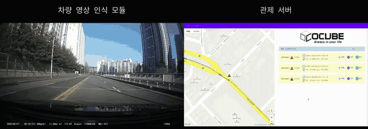

차종별 교통량 분석
학습 데이터와 추적 기술을 기반으로 차종·방향별 통행량을 자동 조사·통계합니다.
기존 카메라 영상을 교통·시설·작업 안전 이벤트로 전환합니다.현장에서 분석하고 중앙에서 대응합니다.

노면 이상 · 검토 필요카메라 영상으로 차종·

카메라 영상에서 차종별 교통량을 자동으로 집계하고, 노면 파손을 실시간으로 찾아 관제로 전달합니다.
도로 영상에서 차량을 검지·
TMS — 실시간 교통량 검출
생명을 위협하는 도로 위의 시한폭탄, 포트홀을 영상 인식으로 검출하고 검출 정보를 관제합니다.
포트홀 — 실시간 검출 데모 (차량 영상 인식 · 관제 서버)
AI Vision 기술을 이용한 차종별 교통량 자동 조사 시스템입니다.
고정식·
측정한 교통량 기준 신호 제어 연계
주차면 점유·
자동 돌발상황 감지(AID)가 위험 장면을 분류해 관제에 알립니다.
검지 항목은 현장 요건에 맞춰 확장하며, 오탐을 줄이기 위해 사람 검수 단계를 둘 수 있습니다. 개인영상정보 비식별 처리는 현장 요건과 관련 규정에 따라 적용합니다.
제품 기능이 실제 현장 과제와 어떻게 연결되는지 보여주는 대표 경험입니다.
학습 데이터와 추적 기술을 기반으로 차종·방향별 통행량을 자동 조사·통계합니다.
영상·작업자 뱃지·환경 센서를 결합해 복합 위험을 작업자별로 판단합니다.
도로 영상을 분석해 노면 파손과 돌발상황을 이벤트로 만들고 지도 관제와 연결합니다.
이미 설치된 카메라를 더 쓰임새 있게 만들어야 하는 현장에 적합합니다.
화면 수가 많아 실시간 확인이 어렵고, 사후 확인에 그치는 환경
조사 인력과 기간이 부담인 도로·
신고 전에 찾아야 하는 포트홀·
원본을 밖으로 내보내지 않고 현장에서 비식별 처리해야 하는 환경